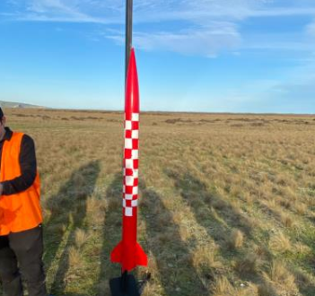
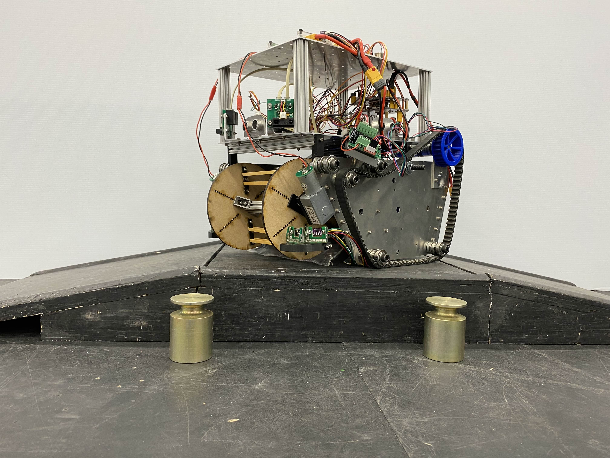

Other projects that I have worked on during my time in engineering.


In addition to the projects detailed above, I have worked on a variety of other projects that have allowed me to explore different technologies and problem domains. These projects include:
- For my final year project, I am currently developing a 6DOF model and accompanying control architecture for a fixed-wing Electric Ducted Fan powered aircraft in Simulink/Matlab. I am currently designing a control framework in Simulink to interface with Ardupilot, and will be exploring parameter estimation and adaptive control for the use case.
- Development of a competition robot in teams of three for the "RoboCup" competition. The robot had to autonomously collect more weights than opposing robots, while also discarding "dummy" plastic weights. I worked primarily on the CAD for the weight collection system and the development of software and navigation drivers. Many components that we were given were notably unreliable and as such the robot needed to be robust to component failure.
- Creation of a custom machine assistant with vector-embedding based local memory and recall, facial recognition, wake word detection, TTS/STT integration, task scheduling with a low-power sleep mode, emotion recognition, and spotify integration on a Raspberry Pi. Vector "keys" for previous interactions with users are stored in their area of the vector space so that the program is able to recall facts without having to comb through a database.
- Development of an elevator control algorithm on a Programmable Logic Controller. Smooth movement, request scheduling, and extensive gain tuning was implemented to meet criteria.
- Ongoing development of a "smart watch" embedded system, currently in the stage of PCB design. I currently plan to use a heartrate monitor, IMU, barometer, and temperature sensor to collect environmental data.
- Reporting, openrocket modelling, assembly, painting, and launch of a Level 1 rocket. The launch was succesful and the rocket was recovered.
- Reading brainwaves using an EEG headset over serial, and determining when a user is concentrating by isolating beta brainwaves.